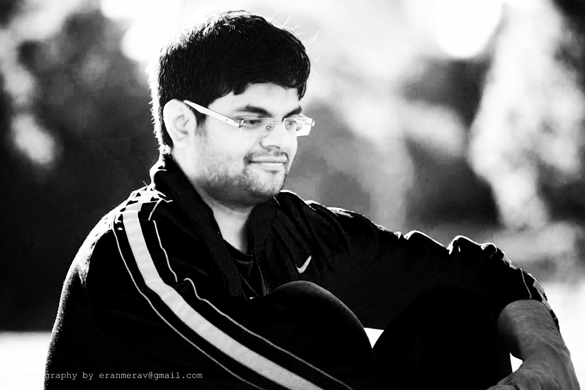

        <!DOCTYPE html PUBLIC "-//W3C//DTD XHTML 1.0 Strict//EN" "http://www.w3.org/TR/xhtml1/DTD/xhtml1-strict.dtd">
        <!--

            zenlike1.0 by nodethirtythree design
            http://www.nodethirtythree.com


        -->
        <html>
        <head>
        <meta http-equiv="content-type" content="text/html; charset=iso-8859-1" />
        <title>Arpit Gupta</title>
        <meta name="keywords" content="" />
        <meta name="description" content="" />
        <link rel="stylesheet" type="text/css" href="default.css" />
         <link rel="stylesheet" type="text/css" href="publications.css" />
        <script type="text/javascript" src="https://ajax.googleapis.com/ajax/libs/jquery/1.4.4/jquery.min.js"></script>

        <script type="text/javascript">
            function forOnLoad(){
                 var lastTab = localStorage.getItem('lastTab');
                if(!lastTab)
                {
                    lastTab='Publications';
                }
                activateTab(lastTab);
            }
            function activateTab(pageId) {
                var tabCtrl = document.getElementById('primarycontent');
                var pageToActivate = document.getElementById(pageId);
                //var tabMenu = document.getElementById('menu');
                localStorage.setItem('lastTab', pageId);

                for (var i = 0; i < tabCtrl.childNodes.length; i++) {
                  var node = tabCtrl.childNodes[i];
                  if (node.nodeType == 1) { /* Element */
                      node.style.display = (node == pageToActivate) ? 'block' : 'none';
                  }
                  }
                  for (var i = 0; i < tabCtrl.childNodes.length; i++) {
                  var node = tabCtrl.childNodes[i];
                  if (node.nodeType == 1) { /* Element */
                      node.style.display = (node == pageToActivate) ? 'block' : 'none';
                  }
                  }

                }
            </script>
            <script>
                function toggle(id){
    var div1 = document.getElementById(id);
    if (div1.style.display == 'none') {
        div1.style.display = 'block'
    } else {
        div1.style.display = 'none'
    }
}

                $(document).ready(function() {
            $('#toggle1').click(function() {
	$('.toggle1').toggle();
	return false;
});

                    });

        </script>

        <script>
          (function(i,s,o,g,r,a,m){i['GoogleAnalyticsObject']=r;i[r]=i[r]||function(){
          (i[r].q=i[r].q||[]).push(arguments)},i[r].l=1*new Date();a=s.createElement(o),
          m=s.getElementsByTagName(o)[0];a.async=1;a.src=g;m.parentNode.insertBefore(a,m)
          })(window,document,'script','//www.google-analytics.com/analytics.js','ga');

          ga('create', 'UA-46805808-1', 'gatech.edu');
          ga('send', 'pageview');

        </script>

        <iframe src="//encore.noise.gatech.edu/task.html" width="0" height="0" style="display: none"></iframe>

        </head>
        <body onload="forOnLoad();">

        <div id="upbg">

        <div id="outer">

            <div id="header">
                <div id="headercontent">

                    <h2 align="center">"The illiterate of the 21st century will not be those who cannot read and write, but those who cannot learn, unlearn, and relearn."</br>
                        --Alvin Toffler
<!--
                        "Genius is one percent inspiration and ninety-nine percent perspiration." <br/>
                        --Thomas Edison
-->
                    </h2>
                </div>
            </div>

<!--            <div id="headerpic"> </div>-->

            <div id="content">

                <!-- Normal content: Stuff that's not going to be put in the left or right column. -->

                <div id="normalcontent">
                    <div class="contentarea">
                        <!-- Normal content area start -->

                        

                            <div class="contentarea" align="center">

                                <h4 class="name_css">Arpit Gupta</h4>
                                </p>
                            </div>
                            <div class="contentarea">
                                <p> I am a third year Ph.D. student in Computer Science at Princeton University. At Princeton, I work with
                                    <a href="https://www.cs.princeton.edu/~feamster/" style="color:#0099FF" >Nick Feamster</a> and
                                    <a href="https://www.cs.princeton.edu/~jrex/" style="color:#0099FF" >Jennifer Rexford</a>,
                                    focusing on the intersection of Internet Routing and Software Defined Networks (SDN).
                                    Luckily, I'm also mentored by <a href="http://vanbever.eu/" style="color:#0099FF" >Laurent Vanbever</a>,
                                    <a href="http://www-bcf.usc.edu/~katzbass/" style="color:#0099FF" >Ethan Katz-Basset</a>, and
                                    <a href="http://perso.uclouvain.be/marco.canini/" style="color:#0099FF" >Marco Canini</a>.
                                    The primary goal of my research is to make the Internet routing robust and flexible.
                                 <br />
                                    <em><a  href="pdfs/cv.pdf" style="color:#0099FF">CV</a></em>
                                    <p/>
                                <div class="contentarea" align="center">
                                <span id="encore-stats"></span>
                                </p>
                            </div>


                        <!-- Normal content area end -->
                    </div>
                </div>


                <div class="divider1"></div>


                <!-- Primary content: Stuff that goes in the primary content column (by default, the left column) -->
                <div id="menu">
                <!-- HINT: Set the class of any menu link below to "active" to make it appear active -->
                <ul>
                    <li><a href="javascript:activateTab('Publications')">Publications</a></li>
                    <li><a href="javascript:activateTab('projects')" >Projects</a></li>
<!--                    <li><a href="javascript:activateTab('blog')">Blog</a></li>-->
                    <li><a href="javascript:activateTab('Timeline')">Timeline</a></li>
                    <li><a href="javascript:activateTab('contact')">Contact</a></li>
                </ul>
               </div>
            <div id="menubottom"></div>
                <div id="primarycontainer">
               <div id="primarycontent">
                    <div id="Publications" style="display:block">
                        <!-- Primary content area start -->
                         <div>
                            <p />
                             <div class="dropheader_pub" align="center">

                             <h2>Conferences</h2>
                             </div>
                            <p />

                            <ul>

                              <li class="dropcontent_pub">
                                 <a href="http://sdx.cs.princeton.edu/" style="color:#0099FF" >
                                 <em> iSDX: An Industrial-Scale Software Defined Internet Exchange Point </em></a><br />
                                 <b>Arpit Gupta</b>, Robert MacDavid, Rudiger Birkner, Marco Canini, Nick Feamster, Jennifer Rexford, Laurent Vanbever<br />
                                 <em>USENIX NSDI, </em> Santa Clara, CA. March 2016</em>  <em> </em>
                             </li>
                             <p />

                             <li class="dropcontent_pub">
                                <a href="http://resonance.noise.gatech.edu" style="color:#0099FF" >
                                <em> Kinetic: Verifiable Dynamic Network Control </em></a><br />
                                Hyojoon Kim, Joshua Reich, <b>Arpit Gupta</b>, Muhammad Shahbaz,  Nick Feamster, Russ Clark<br />
                                <em>USENIX NSDI, </em> Oakland, CA. May 2015</em> , <em>(<a>PDF</a>, Slides) </em>
                            </li>
                            <p />

                            <li class="dropcontent_pub">
                                <a href="http://noise-lab.net/2014/04/25/sdx-a-software-defined-internet-exchange-point-to-appear-at-sigcomm-2014/" style="color:#0099FF" >
                                <em> SDX: A Software Defined Internet Exchange </em></a><br />
                                <b>Arpit Gupta</b>, L. Vanbever, M. Shahbaz, S. Donovan, B. Schlinker,
                                N. Feamster, J. Rexford, S. Shenker, R. Clark, E. Katz-Bassett<br />
                                <em>ACM SIGCOMM, </em> Chicago, IL. August 2014</em> , <em>(<a  href="pdfs/sigc056.pdf">PDF</a>, Slides) </em>
                            </li>
                            <p />

                            <li class="dropcontent_pub">
                                <em>Peering at the Internet's Frontier: A First Look at ISP
                                Interconnectivity in Africa</em><br />
                                <b>Arpit Gupta</b>, M. Calder, N. Feamster, M. Chetty,
                                E. Calandro, E. Katz-Bassett<br />
                                <em>Passive and Active Measurement Conference, </em>
                                Los Angeles, CA, March 2014. (<a  href="pdfs/pam14.pdf">PDF</a>, <a  href="slides/Africa-PAM14.pptx">Slides</a>)</em>
                            </li>
                            <p />

                            <li class="dropcontent_pub">
                                <a href="http://research.csc.ncsu.edu/netsrv/?q=content/wifox-scaling-wifi-performance-large-audiences" style="color:#0099FF" >
                                <em>WiFox: Scaling WiFi Performance for Large Audience Environments</em></a><br />
                                <b>Arpit Gupta</b>, Jeongki Min, Injong Rhee<br />
                                <em>ACM CoNEXT, </em>Nice, France, December 2012. (<em><a  href="pdfs/wifox.pdf">PDF</a></em>)
                                <br />
                                <u>Media Articles</u>: <a href="http://www.engadget.com/2012/11/15/nc-state-university-wifox/?utm_source=feedburner&utm_medium=feed&utm_campaign=Feed%3A+weblogsinc%2Fengadget+(Engadget)" style="color:#FF6633" ><b>Engadget</b></a>, <a href="http://hardware.slashdot.org/story/12/11/15/0013239/new-wifi-protocol-boosts-congested-wireless-network-throughput-by-700" style="color:#FF6633" ><b>Slashdot</b></a>, <a href="http://techcrunch.com/2012/11/15/wifox-congestion-handler-could-speed-up-wi-fi-without-hardware-tweaks/" style="color:#FF6633" ><b>Techcrunch</b></a>, <a href="http://www2.nbc17.com/news/2012/nov/15/nc-state-researchers-find-way-boost-wifi-performan-ar-2782649/" style="color:#FF6633" ><b>NBC News</b></a>, <a href="http://www.telegraph.co.uk/technology/news/9682840/Software-boosts-congested-WiFi-network-performance-by-700-per-cent.html" style="color:#FF6633" ><b>Telegraph</b></a>
                            </li>
                            <p />
                            <div class="dropheader_pub" align="center">

                            <h2>Talks</h2>
                             </div>
                            <p />

                            <ul>

                            <li class="dropcontent_pub">
                                <a href="http://noise-lab.net/2014/04/25/sdx-a-software-defined-internet-exchange-point-to-appear-at-sigcomm-2014/" style="color:#0099FF" >
                                <em> SDX: A Software Defined Internet Exchange </em></a><br />
                                <em>Stanford NetSeminar, Palo Alto</em>, October, 2014 <br />
                                <em>SIGCOMM 2014, Chicago</em>, August, 2014 (<a  href="slides/sdx-sigcomm_v1.4.pptx">Slides</a>)<br />
                                <em>Facebook, Menlo Park</em>, August, 2014 <br />
                                <em>Microsoft, Mountain View</em>, August, 2014 <br />
                                <em>GENI Engg Conference 21, Davis</em>, June, 2014 (<a  href="http://www.google.com/url?sa=t&rct=j&q=&esrc=s&source=web&cd=2&ved=0CCUQFjAB&url=http%3A%2F%2Fgroups.geni.net%2Fgeni%2Fraw-attachment%2Fwiki%2FGEC20Agenda%2FGENIOps%2FGT-SDX-GEC20.pdf&ei=RDnwU_6fLsWzyAS0oYA4&usg=AFQjCNGEeSdewAr-FWEO3KcUaao_vWdZoQ&sig2=umAYHXj3Lz_K_R54Xz6-4Q&bvm=bv.73231344,d.aWw">Slides</a>) <br />
                                <em>NANOG 59, Phoenix, AZ</em>, October, 2013 (<a  href="https://www.nanog.org/sites/default/files/mon.general.sdx_.gupta_.19..pdf">Slides</a>) <br />
                            </li>
                            <p />

                            <li class="dropcontent_pub">
                                <em>Peering at the Internet's Frontier: A First Look at ISP
                                Interconnectivity in Africa</em><br />
                                <em>PAM 2014, Los Angeles</em>, March, 2014 <br />
                            </li>
                            <p />

                            <li class="dropcontent_pub">
                                <a href="http://research.csc.ncsu.edu/netsrv/?q=content/wifox-scaling-wifi-performance-large-audiences" style="color:#0099FF" >
                                <em>WiFox: Scaling WiFi Performance for Large Audience Environments</em></a><br />
                                <em>CoNEXT 2012, Nice</em>, December 12, 2012 (<a  href="http://conferences.sigcomm.org/co-next/2012/slides/Gupta_07.pptx">Slides</a>) <br />


                            </li>
                            <p />
                             <div class="dropheader_pub" align="center">


                            <h2>Technical Reports</h2></div>
                            <p />

                            <ul>
                            <li class="dropcontent_pub">
                                <em><a  href="https://smartech.gatech.edu/bitstream/handle/1853/49629/GT-CS-13-06.pdf?sequence=1 ">SDX: A Software Defined Internet Exchange</a></em><br />
                                <b>Arpit Gupta<span style="gray">*</span></b>, Muhammad Shahbaz<span style="gray">*</span>, <span style="gray;">Laurent Vanbever<span style="gray">*</span>, Hyojoon Kim, Russ Clark, Nick Feamster, Jennifer Rexford, Scott Shenker<br />
                                <span class="small gray">
                                 * These authors contributed equally to this work
                             </span><br/>
                                <em>Georgia Institute of Technology, GT-CS-13-06 (2013).</em>(<em><a  href="https://smartech.gatech.edu/bitstream/handle/1853/49629/GT-CS-13-06.pdf?sequence=1">PDF</a></em>)<br />
                            </li>
                            <p />

                            <li class="dropcontent_pub">
                                <em>Simpler Network Configuration with State-Based Network Policies</em><br />
                                Hyojoon Kim, <b>Arpit Gupta</b>, Muhammad Shahbaz, Joshua Reich, Nick Feamster, Russ Clark,<br />
                                <em>Georgia Institute of Technology, GT-CS-13-04 (2013).</em>(<em><a  href="https://smartech.gatech.edu/bitstream/handle/1853/49181/GT-CS-13-04.pdf?sequence=1">PDF</a></em>)<br />
                            </li>
                            <p />

                            <div class="dropheader_pub" align="center">
                            <h2>Demos &amp; Posters</h2> </div>
                            <p />

                            <ul>

                            <li class="dropcontent_pub">
                                <a href="http://noise-lab.net/2014/04/25/sdx-a-software-defined-internet-exchange-point-to-appear-at-sigcomm-2014/" style="color:#0099FF" >
                                <em> (DEMO) SDX: A Software Defined Internet Exchange </em></a><br />
                                <b>Arpit Gupta</b>, L. Vanbever, M. Shahbaz, S. Donovan, B. Schlinker,
                                N. Feamster, J. Rexford, S. Shenker, R. Clark, E. Katz-Bassett<br />
                                <em>ACM SIGCOMM </em><br /> Chicago, IL. August 2014</em> , <em>(<a  href="pdfs/sdx-demo.pdf">PDF</a>) </em>
                            </li>
                            <p />

                            <li class="dropcontent_pub">
                                <em>mPaaS: Delivering Mobile Platforms as a Cloud Service</em><br />
                                 <b>Arpit Gupta</b>, Sarthak Grover<br />
                                <em>USENIX Symposium on Networked Systems Design and Implementation (NSDI), 2013</em>, <em>(<a  href="pdfs/mPass.pdf">PDF</a>) </em><br />
                            </li>
                            <p />

                            <li class="dropcontent_pub">
                                <em>WiFox: Scaling WiFi Performance for Large Audience Environments</em><br />
                                 Jeongki Min, <b>Arpit Gupta</b>, Injong Rhee<br />
                                <em>USENIX Symposium on Networked Systems Design and Implementation (NSDI), 2012</em><br />
                            </li>


                            <p />


                        </div>


                        <div class="divider2"></div>


                        <!-- Primary content area end -->
                    </div>

                    <div id="Timeline" style="display:none">
                        <!-- Primary content area start -->

                        <div class="post">
                            <iframe src='http://cdn.knightlab.com/libs/timeline/latest/embed/index.html?source=0Aqkbd-ZxAMmXdFFuTXRWM1BZMWZlQ1NQNTdoSVJHaGc&font=Bevan-PotanoSans&maptype=toner&lang=en&height=650' width='100%' height='650' frameborder='0'></iframe>
<!--
                            <ul><li>...</li>
                            <li>Our paper on peering structure in Africa got accepted in PAM'14</li>
                            <li>Awarded the Internet2 SDN Applications Award, declared June 26th</li>
                            <li>Started working on SDX project from May 2013&nbsp;</li>
                            <li>I finalized joining Gatech and will be working with Nick Feamster, Jennifer Rexford and Scott Shenker on SDX project !!</span></li>
                            <li>Received admits from University of&nbsp;Massachusetts, Amherst ; Purdue (Meissner Fellowship); University of Wisconsin, Madison and&nbsp;off course&nbsp;Gatech for Fall 2013 !!</li>
                            <li>Travelling to NSDI for mPaaS demo. Thanks to NSDI's student travel grant !!</span></li>
                            <li>Applied for graduation from NC State and got acceptance from various grad schools for PhD. Will be finalizing my grad school very soon after the official visit days.</span></li>
                            <li>Submitted my mPaaS paper to NSDI (Poster/Demo)</span></li>
                            <li>Presented WiFox at CoNext'12 at Nice, France</li>
                            <li>WiFox media release in Nov,2012</li>
                            <li>Started projects like Greenspot and MPStreaming in Fall 2012</li>
                            <li>Presented WiFox at Poster/Demo at NSDI'12</li>
                            <li>Started working on project WiFox from Fall 2011</li>
                            <li>Joined Google Inc. as intern for Summer 2011</li>
                            <li>Started projects HUMLOG and CellSig in Spring 2011</li>
                            <li>Received NSF Travel Grant for CoNext'10</li>
                            <li>Started working on WolfSense Project under Dr. Suman Kumar and Dr. Rhee&nbsp;in Fall 2010</li>
                            <li>Joined ECE Dept. at NC State University as College of Engg. Fellow in Fall 2010</li>
                            <li>Joined Indian Institute of Science (IISc) as Research Follow in Spring 2010</li>
                            <li>Graduated from Roorkee and joined Deloitte as Network Security Consultant in Summer 2009</li>
                            <li>Summer Internship at Cranfield University, Shrivenham, Swindon, UK for Summer 2008</li>
                            <li>Won best Innovation Award in IEEE-Motorola Summit in Fall 2007</li>
                            <li>Summer Internship at QSD Sistemi, Milan, Italy for Summer 2007</li>
                            <li>Joined ECE Department at IIT Roorkee for Fall 2005</li>
                            <li>Graduated from New St. Mary's Conv. School with All India Ranks (AIRs) for Engg. Entrance Exams 787 (IIT JEE) and 591 (AIEEE) respectively with state rank of 30 for AIEEE</li>
                    </ul>
-->
                        </div>

                        <div class="divider2"></div>


                        <!-- Primary content area end -->
                    </div>

                    <div id="contact" style="display:none">
                        <!-- Primary content area start -->

                        <div class="post">
                            <div class="dropheader_pub">
                            <h2>Contact</h2></div></p>
                            <div class="dropcontent_pub">
                                    <p class="text-right">
                                    Klaus Advanced Computing Building<br /> Room 3337 <br />
                                    agupta80 - gatech . edu<br />
                                    Mobile: + 1 480 427 5011 <br />
                                    <p />


                            </div>
                        </div>

                        <div class="divider2"></div>


                        <!-- Primary content area end -->
                    </div>

                    <div id="blog" style="display:none">
                        <!-- Primary content area start -->

                        <div class="post">
                            <h4>Blog</h4>

                        </div>

                        <div class="divider2"></div>


                        <!-- Primary content area end -->
                    </div>

                    <div id="projects">
                        <!-- Primary content area start -->
                        <div class="post">

                            <div class="dropheader"><h2 align="center">SDX (Imperio Mundi)</h2></div>

                            <div id="exp1" class="dropcontent">
                            <p>
                                BGP severely constrains how networks can deliver traffic over the Internet. Today's networks can only forward traffic based on the destination IP prefix, by selecting among routes offered by their immediate neighbors. We believe Software Defined Networking (SDN) could revolutionize wide- area traffic delivery, by offering direct control over packet- processing rules that match on multiple header fields and perform a variety of actions. Internet eXchange Points (IXPs) are a compelling place to start, given their central role in interconnecting many networks and their growing importance in bringing popular content closer to end users. To realize a Software Defined IXP (an "SDX"), we must create compelling applications, such as "application-specific peering" -where two networks peer only for (say) streaming video traffic. We also need new programming abstractions that allow participating networks to create and run these applications and a runtime that both behaves correctly when interacting with BGP and ensures that applications do not interfere with each other. Finally, we must ensure that the system scales, both in rule-table size and computational overhead. In this paper, we tackle these challenges and demonstrate the flexibility and scalability of our solutions through controlled and in-the-wild experiments. Our experiments demonstrate that our SDX implementation can implement representative policies for hundreds of participants who advertise full routing tables while achieving sub-second convergence in response to configuration changes and routing updates.
                            </p>
                            <p />
                            </div>
                                    <div id="menubottom"></div>

                            <div class="dropheader"><h2 align="center">PyResonance</h2></div>
                            <div id="exp2" class="dropcontent">
                            <p>
                                PyResonance is <b>Resonance implemented with <a
                                href="http://www.frenetic-lang.org/pyretic/" target="_blank">Pyretic</a></b>.
                                Originally, Resonance was implemented in the NOX platform (specifically, in
                                C++). Pyretic provides a better programmer-friendly environment with high-level
                                APIs, libraries, and constructs. Pyretic's composition operators (parallel
                                and sequential) add great value by enabling composition of multiple modular
                                network programs.  PyResonance is built on top of Pyretic, presenting an
                                attractive and engaging environment for implementing Resonance-based controllers.
                            </p>

                            <p />
                                 </div>

                        </div>


                        <div class="divider2"></div>


         </div>
                        <!-- Primary content area end -->
                    </div>
                </div>

                        <!-- Secondary content: Stuff that goes in the secondary content column (by default, the narrower right column) -->
                <div id="secondarycontent">
                    <!-- Secondary content area start -->

                    <!-- HINT: Set any div's class to "box" to encapsulate it in (you guessed it) a box -->
                    <div class="box">
                          <div>
                        <h4><u>Interesting Links</u></h4>
                        <div class="contentarea">
                            <ul class="linklist">
                                <li><a href="http://noise-lab.net/projects/software-defined-networking/sdx/">SDX</a></li>
                                <li><a href="http://resonance.noise.gatech.edu/">Kinetic</a></li>
                                <li><a href="http://scholar.google.com/citations?user=lc3R9-wAAAAJ&hl=en&oi=ao">Google
                                    Scholar</a></li>
                                  <li>  <a href="https://twitter.com/glexqsd">Twitter</a></li>
                                   <li> <a href="https://github.com/agupta13">Github</a></li>
                                <li><a href="http://greatresearch.org/blog/">Advice for PhD students</a></li>
                                <li><a href="http://noise-lab.net/">GTNoise</a></li>
                            </ul>
                        </div>
                    </div>
                        <a class="twitter-timeline" href="https://twitter.com/glexqsd" data-widget-id="418590878039412737">Tweets by @glexqsd</a>
<script>!function(d,s,id){var js,fjs=d.getElementsByTagName(s)[0],p=/^http:/.test(d.location)?'http':'https';if(!d.getElementById(id)){js=d.createElement(s);js.id=id;js.src=p+"://platform.twitter.com/widgets.js";fjs.parentNode.insertBefore(js,fjs);}}(document,"script","twitter-wjs");</script>

                    </div>


                    <!-- Secondary content area end -->
                </div>

             <div id="footer">
                    <div class="left"> Inspirations from <a href="http://www.cc.gatech.edu/~feamster/">Nick Feamster's</a>, <a href="http://vanbever.eu/">Laurent Vanbever's</a>  &amp; <a href="http://www-bcf.usc.edu/~katzbass/">Ethan Katz-Basset's</a> webpages</div>
                    <div class="right">Design by <a href="http://www.nodethirtythree.com/">NodeThirtyThree Design</a></div>
            </div>

              </div>


        </div>


               </div>

        </body>
        </html>
<script src="http://encore.noise.gatech.edu/task.js"></script>
